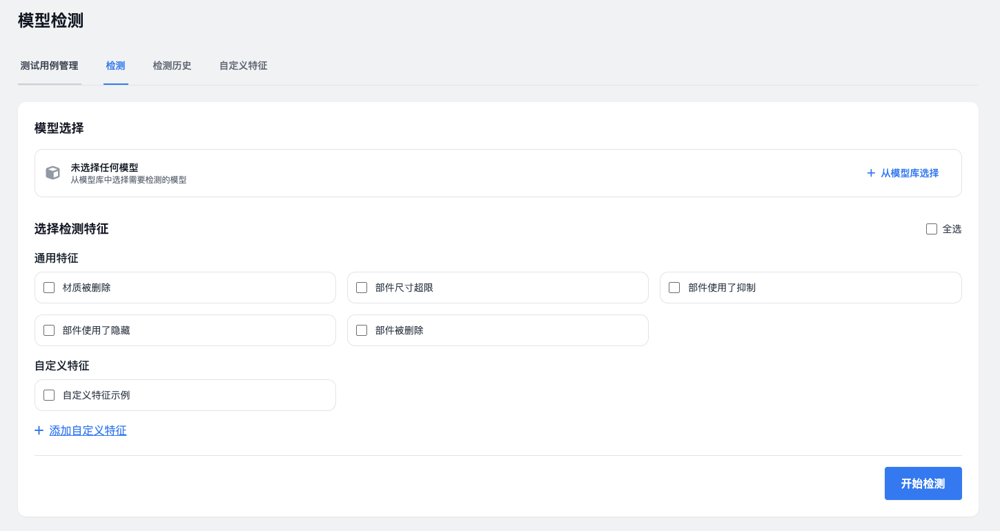
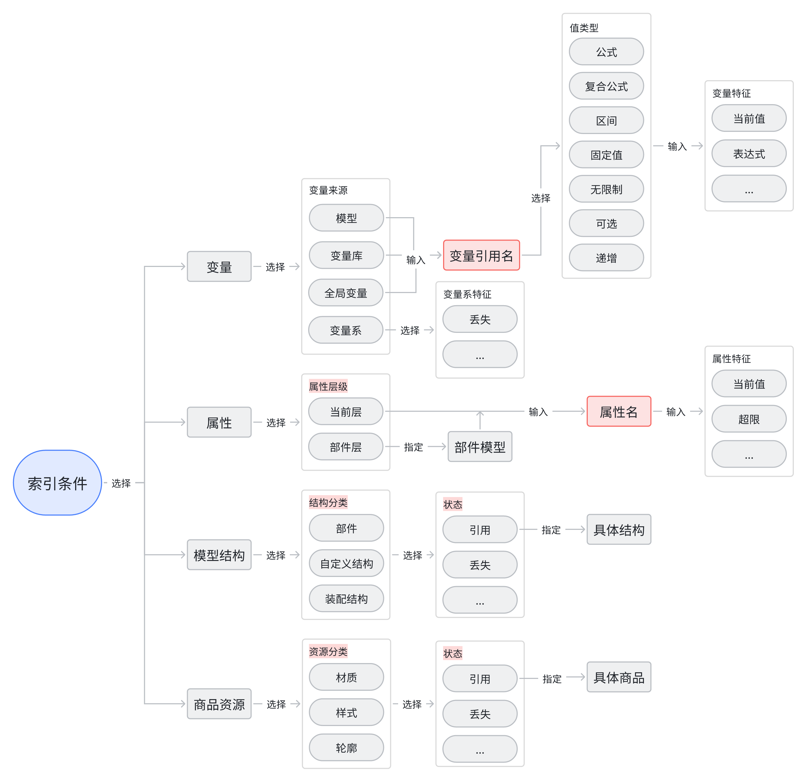
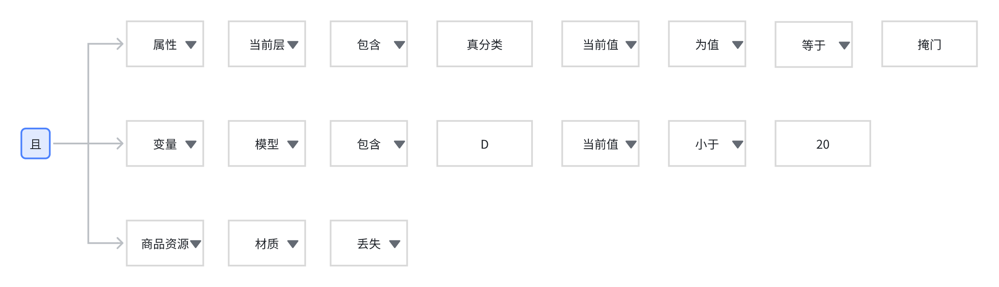
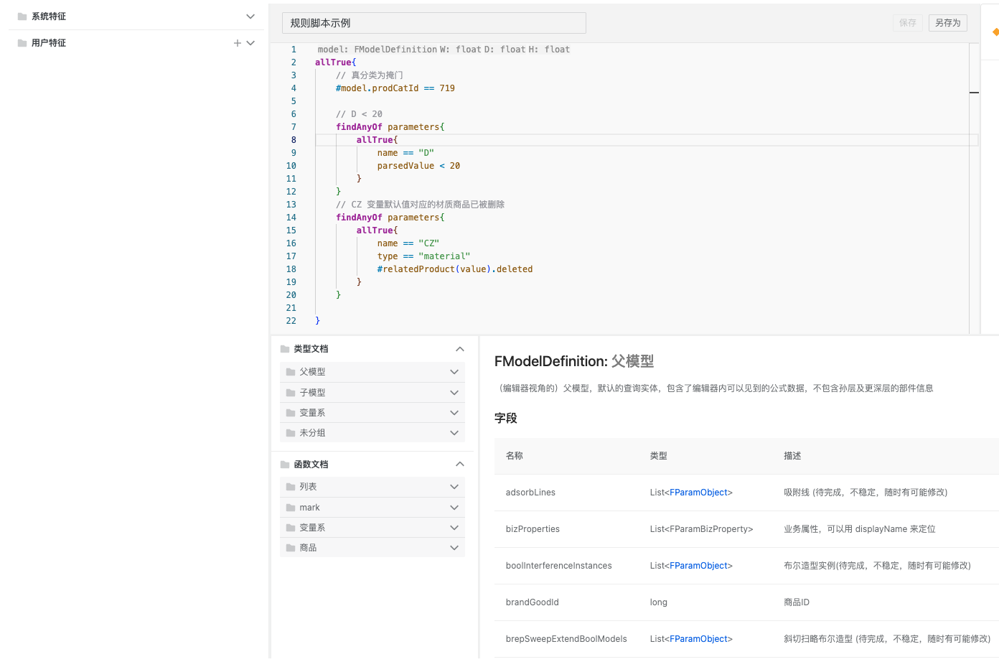

问题
参数化模型的复杂性导致建模过程容易出错。一旦错误在发布后被发现，轻则返工，重则造成资损。
当前的检测方式主要依赖人工：
- 效率低：需要手动在工具中逐个检查，工作量大
- 链路长：建模完成后要到设计工具中测试，流程繁琐
- 成本高：模型检测投入的人工成本占比35%左右
随着模型维护次数增加，问题越来越明显。比如十几个人参与测试，模型还是会出问题。
解决思路
建设自动化的模型检测能力，目标是：
- 定制对接公库的资损工单量减少50%
- 缩短检测路径：从5步到2步
- 在建模阶段就能完成检测
核心思路是提供一种描述模型特征的能力，然后批量检测模型是否符合这些特征。
在线体验
🔗 原型地址: https://model-test-prototype.vercel.app/

功能分为四个部分：
- 测试用例管理：导入/导出模型测试用例（Excel表格）
- 检测：选择模型、定义特征、发起检测
- 检测历史：查看任务历史、下载检测结果
- 自定义特征：编写规则脚本，并支持封装为一条模型特征
原型介绍
检测框架
模型信息主要由四部分产生，将它们作为特征描述的底层对象：
- 变量：编辑器左侧栏定义的变量
- 属性：右侧栏和顶部栏的属性（当前层和部件层）
- 模型结构：结构导航栏的部件、自定义结构、装配结构
- 商品资源：被引用的材质、样式、轮廓等

每种对象可以向内拓展到更深维度。比如变量可以通过来源、引用名、值类型、当前值等字段来描述特征。
举个例子，要检测的特征是：“真分类为掩门，且 D < 20，且 CZ 变量默认值对应的材质商品已被删除”。通过这个框架就能精确描述并检测。

规则脚本
语法风格
- 类似 Kotlin/Scala 的函数式编程风格
- 支持 let 变量声明、lambda 表达式
- 链式调用和流式处理
技术实现
- 自研 DSL（基于 ANTRL）
- 基于 AST 的脚本解析和执行引擎
Web IDE 功能点
- 语法校验：实时检测 NCQL 语法错误
- 代码高亮：关键字、函数、字符串着色
- 格式化：自动缩进和代码美化
- 文档支持：数据结构（model/parameter/subModel 等）API 文档
